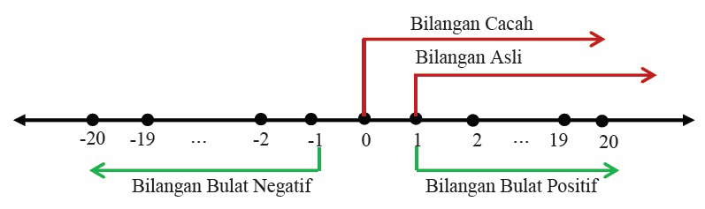
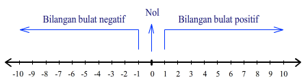

Salah Satu puncak tertinggi di indonesia ialah puncak jayawijaya yang ada di papua. ketika malam hari suhu udara sampai minus 10°C bahkan lebih rendah.
salju mentupi puncak jayawijaya. nah, dalam menentukan besarnya suhu udara maka digunakanlah bilangan bulat untuk menuliskannya.
Ingat, bahwa bilangan bulat memiliki titik acuan (normal) adalah 0. dengan titik acuan tersebut maka suhu udara di kota-kota dunia dapat diukur secara pasti.
Coba Amati Bilangan Asli, bilangan cacah, dan bilangan bulat berikut:
Bilangan Asli = 1,2,3,...
Cacah = 0,1,2,3,...
bilangan Bulat = ...,-2,-1,0,1,2,...
bisa kita lihat seperti yang diatas bahwa bilangan asli ialah bilangan yang dimulai dari angka satu sampai seterusnya sedangkan bilangan cacah adalah bilangan asli yang ditambah dengan bilangan 0.
sedangkan Bilangan Bulat ialah bilangan yang memuat bilangan asli,cacah dan bilangan negatif. letak suatu bilangan asli,cacah dan bilangan bulat dapat dilihat pada garis dibawah ini.

Membandingkan dan mengurutkan Bilangan Bulat
Pada garis bilangan, semakin ke kanan atau ke atas letak suatu bilangan, nilainya semakin besar. sebaliknya,
semakin ke kiri letak suatu bilangan, nilainya semakin kecil. perlu diketahui bahwa setiap bilangan positif selalu lebih besar daripada bilangan negatif
Contoh:

7 berada di sebelah kanan -8. artinya 7 lebih dari -8 atau -8 kurang dari 7
6 berada di sebelah kanan -10. artinya 6 lebih dari -10 atau -10 kurang dari 6
-2 berada di sebelah kanan -4. artinya -2 lebih dari -4 atau -4 kurang dari -2
Simbol-simbol untuk menyatakan hubungan antara dua bilangan bulat (Membandingkan bilangan) dijelaskan dalam tabel dibawah ini.
kalimat
simbol
a lebih dari b
a > b
a kurang dari b
a < b
dari contoh diatas maka bisa ditulis sebagai berikut:
7 lebih dari -8 atau -8 kurang dari 7 → 7 > -8 atau -8 < 7
6 lebih dari -10 atau -10 kurang dari 6 → 6 > -10 atau -10 < 8
-2 lebih dari -4 atau -4 kurang dari -2→ (-2) > -4 atau -4 < -2
Membandingkan Bilangan digunakan sebagai dasar untuk mengurutkan besaran Bilangan. Mengurutkan beberapa Bilangan Bilangan bulat pada dasarnya adalah menuliskan Bilangan bulat secara urut dari nilai yang terbesar atau dari yang terkecil
Contoh:
Urutkan lah Bilangan di bawah ini dari yang terkecil.
-20, 27, 5, -10, 2, 30
Maka dapat kita urutkan menjadi = -20 < -10 < 2 < 5 < 27 < 30
Perlu di ingat
Dalam membandingkan bilangan yang besar, cara mudahnya dengan membandingkan nilai tempat dari kedua bilangan tersebut contoh:
574213 > 573235 karena nilai tempat ribuan pada bilangan I > Bilangan II yaitu 4 > 3
Pertanyaan
1 dari 3
apakah kumpulan bilangan dibawah ini adalah bilangan cacah?
-34,324,23,-45
2 dari 3
Isilah soal ini dengan Simbol-simbol perbandingan bilangan ("<",">")
*Yup... jawaban kamu betul
*Jawaban kamu masih salah.. coba klik tombol buat untuk mencoba lagi ya
3 dari 3
urutkan lah bilangan dibawah ini dari yang terkecil sampai ke terbesar
Petunjuk : tarik bilangan dibawah ini dan taruh kedalam kotak yang kosong